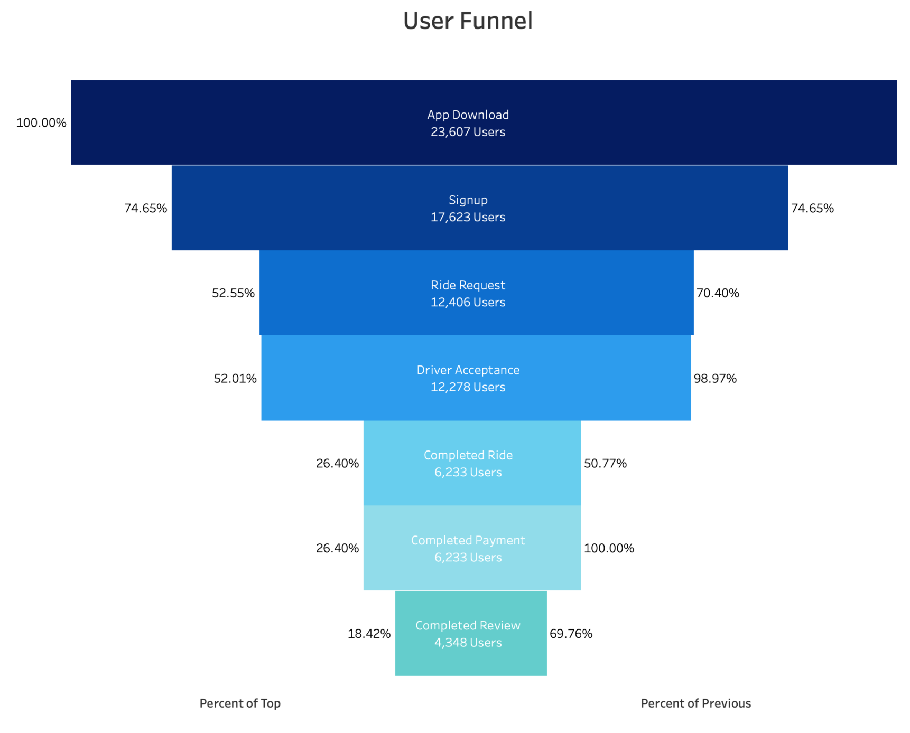
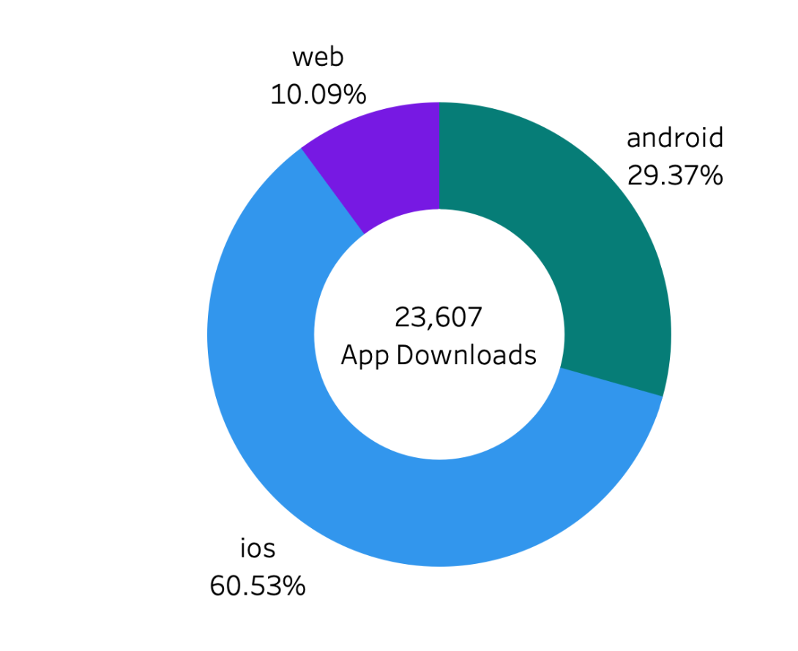
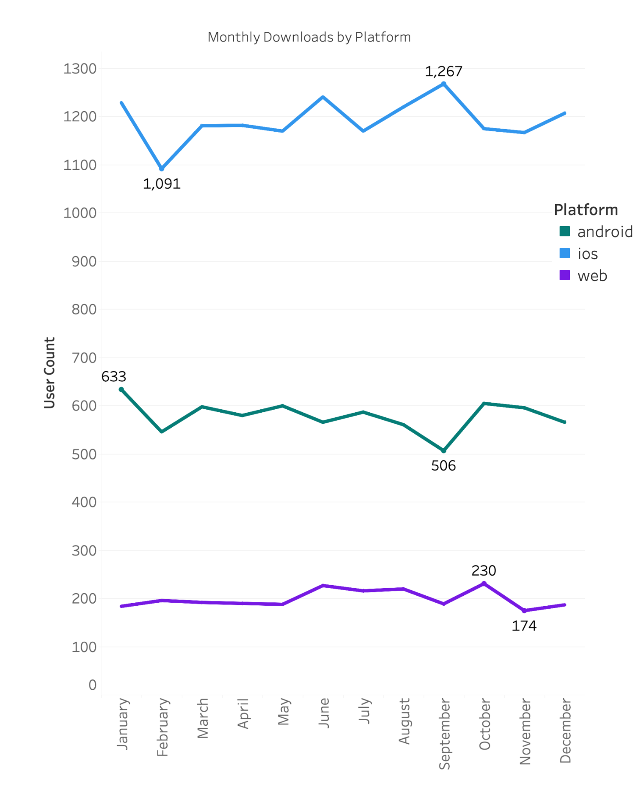
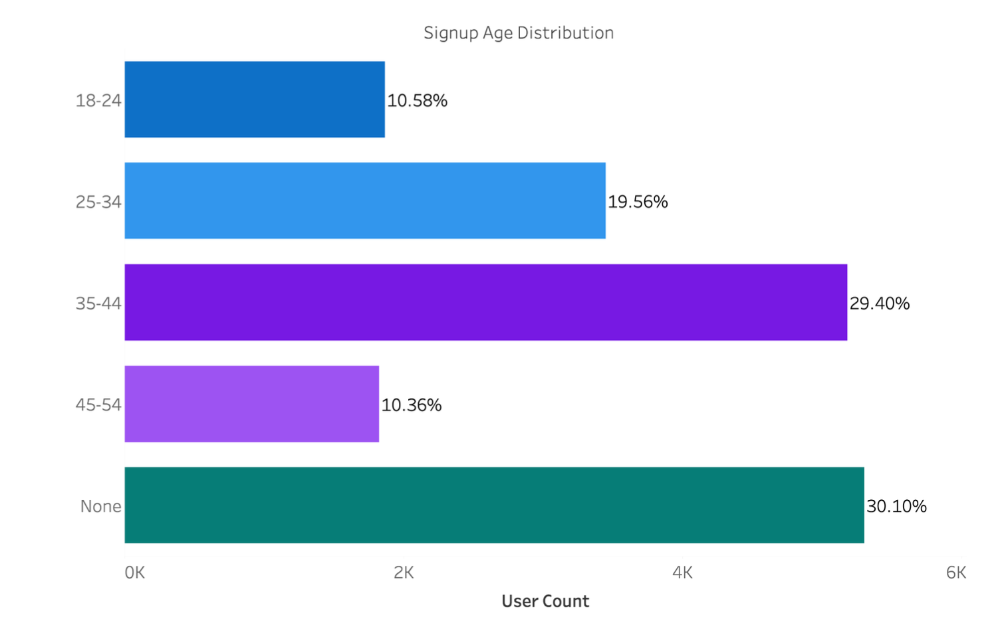
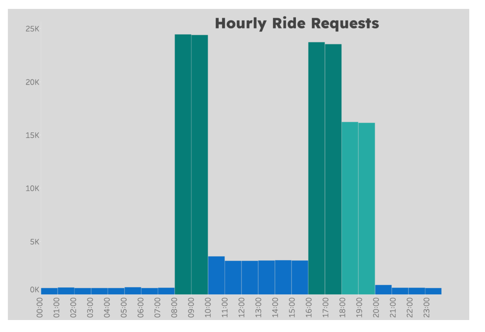

Metrocar
Funnel Analysis
SQL is utilized to aggregate data on a user level. The sales funnel incorporates "percent of previous" and "percent of top" metrics, and was separately created using SQL, Python, and Tableau for a comprehensive learning experience. The interactive Tableau funnel allows further filtering by granularity, metric, and age ranges. The findings are presented below in a final report and a short video.
Table of Contents
- Introduction
- Summary
- Metrocar's Funnel
- Business Questions
- Further Research
- Immediate Recommendations
- App Download: A user downloads the Metrocar app from the App Store or Google Play Store.
- Signup: The user creates an account in the Metrocar app, including their name, email, phone number, and payment information.
- Request Ride: The user opens the app and requests a ride by entering their pickup location, destination, and ride capacity (2 to 6 riders).
- Driver Acceptance: A nearby driver receives the ride request and accepts the ride.
- Ride: The driver arrives at the pickup location, and the user gets in the car and rides to their destination.
- Payment: After the ride, the user is charged automatically through the app,and a receipt is sent to their email.
- Review: The user is prompted to rate their driver and leave a review of their ride experience.
- Improve the driver acceptance to completion of ride conversion: Analyse the reasons for cancellations and non-completions, considering user and driver behaviour. Analyse review data for insights and consider factors like location, time, app usability, and age group variations. Implement measures to address these issues and optimise the conversion rate in this stage.
- A/B the significance of the differences in conversion between age group. If significant, explore opportunities to increase sign up for the 18-24 age group and analyse reviews and insights from the 45-54 age group. Use these insights to optimise the user journey for this age group.
- Consider weekdays, weekends, and special events to further tailor surge pricing strategies and maximise revenue during high-demand periods.
- Set-up investigation for why rides only 50% of accepted rides are completed.
- Focus marketing budget on iOS.
- Focus marketing efforts on our biggest age group,35-44.
- Implement surge pricing during the morning (8am-10am) and afternoon (4pm-6pm) spikes, corresponding to peak demand during commuting times.
Introduction
This project aims to analyze the customer funnel of Metrocar, a ride-sharing app (similar to Uber/Lyft), to identify areas for improvement and optimization. SQL was used for the initial data analysis, as well as aggregating the data to a user level, which could then be used in Tableau. Tableau was used for the visualisation of the funnel and other questions in our analysis. The stakeholders have asked several business questions that can uncover valuable insights for improving specific areas of the customer funnel.
Summary
The analysis of Metrocar's customer funnel has provided valuable insights for optimization. The lowest conversion rate occurs between driver acceptance and completion of the ride steps (50.77%). Marketing efforts should focus on targeting iOS users (60.53% of app downloads). The largest identifiable age segment falls within the 35-44 age range, representing 21.95% of the total users. The 18-24 age group exhibits strong performance, while the 45-54 age group shows potential for improvement. Surge pricing during morning (8am-9am) and afternoon (4pm-5pm) spikes can effectively capitalise on peak demand.
Metrocar's Funnel
The customer funnel for Metrocar includes the following stages:
Business questions
1. What steps of the funnel should we research and improve? Are there any specific drop-off points preventing users from completing their first ride?
Although improvements can be made at the sign-up and ride request point of the funnel, the biggest drop-off is observed after the driver has accepted the ride. Only 50.77% of accepted rides were completed. 74.65% of users downloading the app signed up and 70.40% of signed up users requested a ride.
2. Metrocar currently supports 3 different platforms: ios, android, and web. To recommend where to focus our marketing budget for the upcoming year, what insights can we make based on the platform?
Based on the platform distribution of Metrocar's app downloads, the following insights can guide marketing budget allocation for the upcoming year. Out of the total 23,607 downloads, iOS devices accounted for 60.53%, while Android devices represented 29.37% and web downloads only comprised 10.09%.
Notably, the number of monthly downloads remained relatively consistent throughout the year. September had the highest number of iOS downloads (1,267), while Android downloads were lowest during that month. To optimise marketing efforts, it is recommended to prioritise targeting iOS users.
3. What age groups perform best at each stage of our funnel? Which age group(s) likely contain our target customers?
Before observing insights based on the age groups in each category it is important to note the age distribution among the users. Notably, the "None" category, which represents undisclosed or unknown ages, comprises 30.10% of the user base. The largest identifiable segment falls within the 35-44 age range, representing 29.40% of the total users. The 25-34 age group closely follows with 19.56%. The 18-24 and 45-54 age groups make up smaller proportions at 10.58% and 10.36%, respectively.
There weren't obviously significant differences among the age groups for their conversion rates
in
the funnel. However, certain age ranges showed subtle variations in conversion rates at
different
funnel steps. Among the analyzed age groups, the 18-24 age group consistently performed well in
several funnel steps. They had the highest conversion rates in the driver acceptance step
(99.15%)
and the completed ride step (51.98%). However, the same age group had the lowest conversion rate
in
the ride request step (69.71%), suggesting some room for improvement in that particular stage.
On the other hand, the 45-54 age group consistently showed lower conversion rates
compared
to other age groups. They had the lowest conversion rate in the driver acceptance step (98.6%)
and
the completed ride step (49.72%). However, they had the highest conversion rate in the completed
review step (71.90%). Analysing the reviews could help identify reasons for the lower conversion
rate in this age group.
An analysis of the funnel indicates that users in the 35-44 age group achieved the highest percentage (25.71%) of reaching the end of the funnel, closely followed by the 18-24 age group (25.36%). These findings suggest that these two age groups performed the best in terms of funnel completion.
Considering the size of each age group, it is likely that our target clients fall within the 35-44 age range. The differences in conversion rates and percent of top is very small and an A/B is recommended to identify its significance.
4. Surge pricing is the practice of increasing the price of goods or services when there is the greatest demand for them. If we want to adopt a price-surging strategy, what does the distribution of ride requests look like throughout the day?
Ride requests throughout the day exhibit two significant spikes: one between 8am and 10am and another between 4pm and 6pm. These spikes correspond to the morning and afternoon rush hours, indicating high demand during commuting times. After 6pm, ride requests gradually decrease until around 8pm. Implementing surge pricing during the morning and afternoon spikes would effectively capture peak demand and maximise revenue. Consideration should be given to weekends, seasonal events, and special events that may further influence demand patterns.
5. What part of our funnel has the lowest conversion rate? What can we do to improve this part of the funnel?
The lowest conversion rate in our funnel occurs between the driver acceptance and completion of the ride steps, with a rate of 50.77%. This conversion remained low across all age groups and platforms. To improve this, we need to analyse the reasons behind the low conversion. Understanding whether users or drivers are cancelling rides is crucial. We could analyse the available review information for insights on potential issues. Additionally, examining the location and time of cancellations, app usability, and variations among different age groups can provide further ideas for improvement.
Further Research
Immediate Recommendations
By implementing these recommendations, Metrocar can optimise its customer funnel, target specific age groups, improve conversion rates, and maximise revenue through effective pricing strategies.